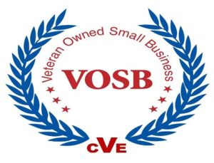

Engineering Secure Infrastructure for Mission-Critical Operations
LanTech Technologies delivers secure, scalable infrastructure engineering, network modernization, and cybersecurity support for federal, defense, and mission-critical environments.

Supporting federal, defense, and commercial organizations that require dependable infrastructure, disciplined execution, and mission-focused engineering support.
Positioned for Government & Mission Support
LanTech Technologies is structured to support federal, defense, and mission-critical environments through disciplined execution, secure infrastructure practices, and alignment with government standards.
What We Deliver
High-level capabilities designed to support secure, modern, and resilient infrastructure environments.
Infrastructure Engineering
Deployment and sustainment of servers, storage, and virtualization platforms.
Network Modernization
Secure network design, segmentation, and performance optimization.
Cybersecurity Support
Secure configurations, system hardening, and risk reduction practices.
Data & Platform Engineering
Data flow, monitoring, and platform-level engineering support.
Mission-Focused Execution
LanTech Technologies
Built to Support Critical Operations
We deliver engineering solutions that prioritize uptime, security, and operational continuity across complex environments.
Our approach is grounded in practical execution, technical depth, and mission-focused delivery.